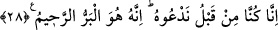

Baklî âyet-i kerîmedeki bu ifâdenin Hak Sübhânehû ve Teâlayı görme anındaki bir
şükran ifâdesi olduğunu belirterek mânânın: “Biz dünyada iken firaktan, ukbâda iken
bu’diyetten korkardık. Bu nedenle Allah bize ihsanda bulunup bu helâk edici, yakıcı
azaptan korudu” şeklinde olduğunu ve bu kelâmı daha rû’yetullahın ilk anında
söylediklerini ancak vuslata erdiklerinde üzerlerinde bulunan bu korku v.b. duyguları
unuttuklarını beyân etmiştir.
“İşfâk” ruhların vasfı “havf” ise kalplerin sıfatıdır. Cüneyd Bağdadi “işfak”ın
korkunun hafif şekli, “havf”in de korkunun ağır şekli olduğu kanâatindedir. Bazı ulemâ
da “işfak”ın evliyaya, “havf”ın da âvâm-ı müminine âid olduğunu belirtmişlerdir.
Vâsıtî (k.s.) demiştir ki: İnsanlar çağrılıp merhamet olunacaklarını düşünürler ancak
vesilelerin, tevessülde bulunanlara hakikat (kapısını) kapattığını, bu düşüncenin,
vesilenin sadece Allah olduğunu idrake engel teşkil ettiğini bilemezler.
28. «Gerçekten biz bundan önce O’na yalvarıyorduk. Çünkü iyilik eden,
esirgeyen ancak O’dur.»
“Gerçekten biz bundan önce” yâni dünyada bulundukları dönemi kasdederek, Allah
ile karşılaşmadan ve O’na dönmeden önce “O’na yalvarıyorduk” , O’na kulluk ediyor
veya O’ndan bizi korumasını istiyorduk.
“Çünkü iyilik eden” el-Muhsin olan “esirgeyen” yâni çok merhamete sâhip olan
“O’dur.” Öyle ki, kendisine ibâdet edildiğinde karşılığını verir ve kendisinden
istenildiğinde hemen icâbet der.
Râgıb “berr”in bahr/deniz kelimesinin zıddı olduğunu, bununla da genişlik ifâde
edildiğini ve âyetteki “berr”in de bu anlamdan yâni “hayırlı işte genişlik” mânâsında
türemiş bir fiil olduğunu beyân etmiştir. Zira berr bâzen Allah Teâlâ’ya, bâzen de kula
nisbet edilerek kullanılmaktadır. Mükâfât Allah’tan, tâat ise kuldandır. Kul tarafından
icrâ edilecek tâat iki çeşittir. Bunlar itikattaki tâat ve amellerdeki tâattir. Amellerdeki
tâat; farzlar, nâfileler, ebeveyne iyilikte bulunma ve onlara ihsânı artırma olup bunun
zıddı ebeveyne isyandır.
Şerhu’l-Esmâ adlı eserinde müellif şöyle eder: Kim Allah Teâlâ’nın el-Berru’r-
Rahîm olduğunu bilirse küçük büyük her şeyde arzu ve iştiyak ile O’na yönelir ve O da
berr u rahmetiyle onu istediği her şeye kavuşturur.
İbn Atâ da Hikem adlı eserinde şu izahı yapar: Allah Teâlâ sana ne zaman bir şey
verirse berrine, ihsân ve fazlına seni şâhid tutmak için vermiştir. Ne zaman da senden
bir şey menederse/vermezse o zaman kahrına, celal ve azametine şâhid tutmak için
menetmiştir/vermemiştir. Her şey bu şekilde senin şehâdetine sunulmakta olup bu bazen
cemâl-i ilâhî ile, bazen celâliyle ve bazen da vûcûd-i lûtfunun sana yönelmesi şeklinde